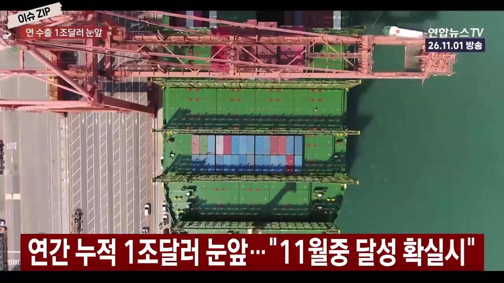
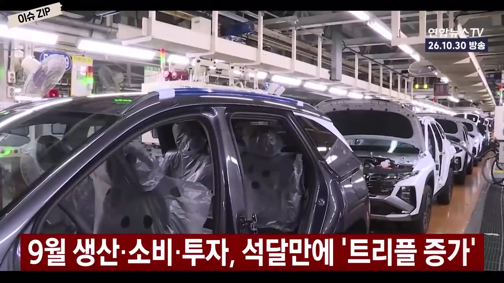
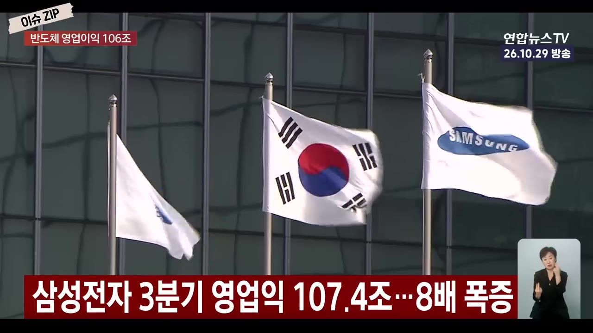
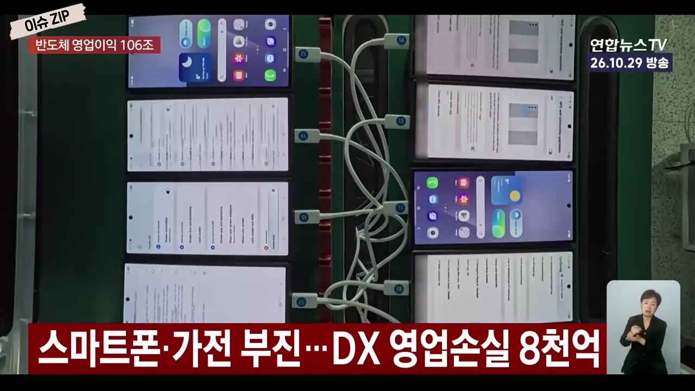
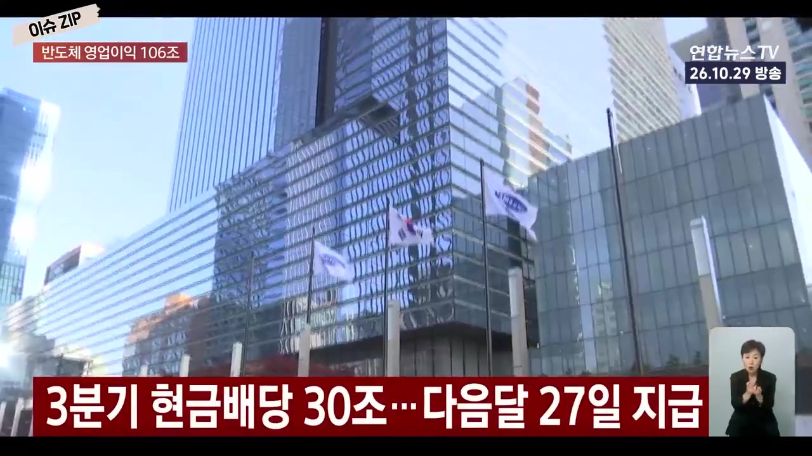
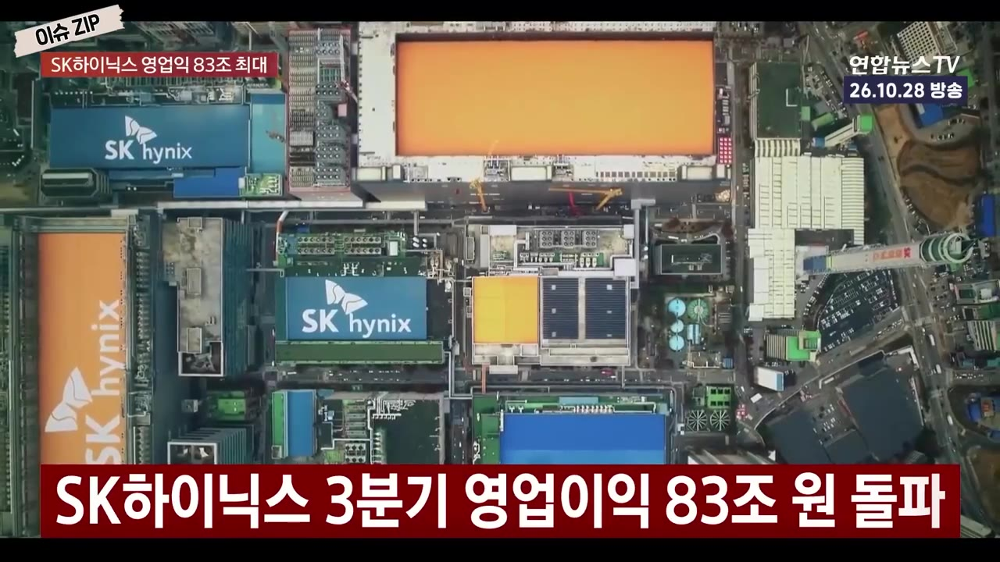

미국·중국·독일 이어 세계 4번째…꿈일 줄만 알았던 '이게' 된다고?｜수출 '1조 달러' 11월 중 달성 확실시 [이슈ZIP] / 연합뉴스TV(YonhapnewsTV)
▶ 원본 영상 보기한눈에 보기
- 10월 수출이 1,153억 달러로 두 달 연속 월 1,000억 달러를 넘었고, 1~10월 누적 수출이 사상 처음 9,000억 달러(9,300억 달러)를 돌파했다.
- 연간 수출 1조 달러까지 700억 달러만 남아, 이달(11월) 중 미국·중국·독일에 이어 세계 4번째 달성이 확실시된다고 산업통상부가 밝혔다.
- 9월 생산·소비·투자가 석 달 만에 모두 늘었고, 산업생산 증가 폭은 15년 6개월 만에 가장 컸다.
- 삼성전자는 3분기 영업이익 107조 4천억 원으로 민간기업 최초 '분기 100조' 시대를 열었고, 이 중 반도체(DS)만 106조 5천억 원이다.
- SK하이닉스는 영업이익 83조 3천억 원·영업이익률 79.7%로 사상 최대를 냈고, "2029년까지 D램·HBM 물량이 사실상 솔드아웃"이라며 AI 고점론을 반박했다.
이런 분께 도움이 됩니다
- 한국 수출·경기 흐름을 숫자로 빠르게 파악하고 싶은 분
- 삼성전자·SK하이닉스 3분기 실적과 주주환원·투자 계획을 한 번에 정리하고 싶은 투자자
핵심 내용
수출 1조 달러, 11월 중 달성 확실시
- 10월 수출액은 1,153억 달러로 역대 월간 2위 규모이며, 9월에 이어 두 달 연속 1,000억 달러를 넘었다. (0:12)
- 전년 같은 달보다 93.7% 증가.
- 1~10월 누적 수출은 9,300억 달러로 사상 처음 9,000억 달러를 돌파했다. (0:33)
- 1조 달러까지 남은 금액은 700억 달러이며, 산업통상부는 이달 중 달성이 확실시된다고 밝혔다. (0:43)
- 달성하면 미국·중국·독일에 이어 세계 4번째(영상 설명 기준).
💡 월 1,000억 달러대 수출이 이어지면서 '꿈의 1조 달러'가 한 달 안에 현실이 된다.

수출을 이끈 품목과 지역
- 반도체 수출은 564억 달러로 9월(603억 달러)에 이어 역대 2위, 두 달 연속 500억 달러를 넘었다. (0:50)
- 증가율은 자막상 '29% 급증'으로 나오나 불분명 (자막상 불분명).
- 20대 주요 품목 중 18개 품목 수출이 늘었다. (1:09)
- 자동차·화장품·농수산식품·바이오헬스: 각각 역대 10월 최대.
- 컴퓨터: 서버용 SSD(데이터센터용 저장장치) 수요로 전년보다 약 5배.
- 선박: 작년 대규모 해양플랜트 수출의 기저효과(비교 대상이 커서 줄어 보이는 현상)로 44% 가까이 감소.
- 9대 주요 지역 중 7곳에서 수출 증가 — 중국 134%, 미국 186%(자막 기준).
- 수입 728억 달러(36% 증가), 무역수지 425억 달러 흑자로 두 달 연속 400억 달러 흑자. (1:52)
| 항목 | 10월 실적 |
|---|---|
| 수출 | 1,153억 달러 (+93.7%) |
| 반도체 수출 | 564억 달러 |
| 수입 | 728억 달러 (+36%) |
| 무역수지 | 425억 달러 흑자 |
9월 생산·소비·투자 '트리플 증가'
- 9월 생산·소비·투자가 모두 늘어 석 달 만에 트리플 증가를 기록했다. 산업생산은 15년 6개월 만에 최대 폭 증가. (2:06)
- 전산업 생산: 전월보다 3% 증가(국가데이터처).
- 반도체 생산 19.2%, 자동차 39.9% 증가(자막 기준) → 광공업 생산 9% 증가.
- 소매판매 3.6% 증가 — 3년 7개월 만에 최대 폭. (2:33)
- 설비투자 5.3% 증가.

삼성전자, 민간기업 첫 분기 영업이익 100조
- 3분기 영업이익 107조 4천억 원으로 전년 대비 8배 가까이 늘었고, 매출은 195조 원을 넘었다. (2:58)

- 4분기 연속 매출·영업이익 모두 역대 최고.
- 2개 분기 연속 영업이익 세계 1위, 민간기업 최초 분기 영업이익 100조 원.
- 반도체(DS 부문) 영업이익 106조 5천억 원, 완제품(DX 부문, 스마트폰·가전)은 영업손실 8천억 원 수준(자막상 '8,억', 불분명)으로 적자가 이어졌다. (3:27)
💡 삼성전자 이익은 사실상 전부 반도체에서 나왔다.

삼성전자 주주환원·투자·내년 전망
- 3분기 배당으로 총 30조 원 규모 현금 배당 — 보통주·우선주 모두 주당 4,601원, 다음 달(12월) 27일 지급 예정. (3:42)

- 올해 총 90조~110조 원 규모 주주환원 계획, 남은 재원 최대 75조 원은 상당 부분 자사주 매입·소각에 쓸 방침.
- 올해 시설투자 84조 원, 이 중 76조 원 이상을 반도체에 투입.
- 호실적에도 주가는 부진하지만, 회사는 "내년 HBM(고대역폭 메모리, AI용 고성능 D램) 공급 물량은 이미 완판, 고객사 추가 요청도 잇따른다"며 내년 실적에 자신감을 보였다(회사 측 주장). (4:40)
SK하이닉스, 영업이익 83조·이익률 79.7%
- 3분기 영업이익 83조 3천억 원으로 전년 대비 632% 증가, 증권가 예상(76조 원대)을 크게 웃돌았다. (5:14)
- 매출 104조 6천억 원으로 분기 첫 100조 원 돌파.
- 원동력은 AI용 메모리: HBM4 출하 본격화, 서버용 D램 판매 증가, 공급 부족에 따른 가격 상승.
- 영업이익률은 사상 최고 79.7%. (5:49)

"2030년까지 공급 부족" — AI 고점론 반박
- 회사 판단: AI 투자가 빅테크를 넘어 일반 기업·국가 차원으로 넓어지는데, 생산 기술 난도와 공장 건설 기간 때문에 공급 확대에는 한계가 있다. (5:58)
- 공급이 수요에 못 미치는 상황이 2030년까지 이어질 것으로 전망.
- LTA(장기공급계약) 확보 물량과 협의 중 수요를 합치면 2029년까지 3년간 D램·HBM 물량이 사실상 솔드아웃이라고 밝혔다. (6:30)
- 내년 투자 규모를 올해보다 크게 늘릴 계획.
💡 전망은 모두 회사 측 주장으로, 시장의 'AI 고점론'에 대한 반박이다.
기억할 숫자·인용
- 10월 수출 1,153억 달러 / 누적 9,300억 달러 / 1조 달러까지 700억 달러
- 10월 반도체 수출 564억 달러, 무역흑자 425억 달러
- 9월 산업생산 증가 폭 15년 6개월 만에 최대, 소매판매 +3.6%
- 삼성전자 3분기 영업이익 107조 4천억 원(DS 106조 5천억 원), 매출 195조 원+, 주당 배당 4,601원(총 30조 원)
- 삼성전자 올해 주주환원 90~110조 원, 시설투자 84조 원(반도체 76조 원+)
- SK하이닉스 3분기 영업이익 83조 3천억 원(+632%), 매출 104조 6천억 원, 영업이익률 79.7%
- SK하이닉스: "2029년까지 향후 3년 동안 당사의 D램과 HBM 물량은 사실상 모두 솔드아웃된 상황입니다."
생각해볼 점
- 수출 증가가 반도체 한 업종에 크게 기대고 있다. 삼성전자도 DX 부문은 적자여서, 메모리 가격이 꺾이면 수출·실적이 함께 흔들릴 수 있다(내 의견).
- '2030년까지 공급 부족', '2029년까지 솔드아웃'은 회사의 전망이다. 고객사 AI 투자 속도나 경쟁사 증설에 따라 달라질 수 있어 분기마다 확인이 필요하다.
- 자동 자막이라 일부 수치(반도체 수출 증가율, 자동차 생산 증가율, DX 손실 규모)가 불분명하다. 정확한 값은 산업통상부 수출입 동향·각사 실적 발표 자료로 확인하는 게 좋다.
바로 해볼 일
- 11월 수출입 동향 발표(12월 초)에서 연간 1조 달러 달성 여부 확인하기
- 삼성전자 보유자라면 배당 지급일(12월 27일 예정)과 자사주 소각 공시 일정 체크하기
- 삼성전자·SK하이닉스 3분기 실적 발표 자료에서 HBM 판매 비중과 내년 투자 계획 원문 확인하기